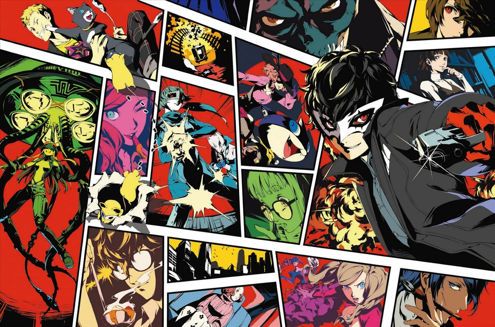

A história de Persona 5 acompanha um jovem estudante conhecido como Joker (protagonista), que é falsamente acusado de agressão ao tentar proteger uma mulher de um político influente. Condenado à liberdade condicional, ele se muda para Tóquio para passar um ano letivo morando no Café Leblanc sob a tutela de Sojiro Sakura. Logo após chegar a Tóquio, Joker e novos colegas de escola (como Ryuji Sakamoto e Ann Takamaki) descobrem o Metaverso — uma dimensão paralela gerada pela cognição e pelos desejos ocultos das pessoas.
.jpeg)
Nesse mundo, adultos corruptos e abusivos possuem Palácios, que são manifestações distorcidas de suas mentes. Para combater esses abusos, o grupo desperta seus Personas (manifestações de sua psique baseadas em figuras de rebeldes e foras-da-lei, como Arsène Lupin) e formam os Phantom Thieves of Hearts (Ladrões Fantasmas de Corações). O objetivo deles é "roubar o tesouro" do coração de alvos corruptos no Metaverso para fazer com que confessem seus crimes no mundo real.
O Confronto Final:
• O Grande Vilão Humano: Os Phantom Thieves descobrem que o homem por trás da conspiração é o Presidente Masayoshi Shido — o mesmo político que arruinou a vida de Joker no início. Shido pretendia usar o Metaverso para controlar o Japão. O grupo invade o Palácio de Shido (que tem a forma de um navio de luxo) e consegue fazê-lo confessar seus crimes logo após vencer as eleições.

• O Deus da Cognição: Mesmo com a confissão de Shido, a população prefere ignorar a realidade e buscar um líder autoritário. Isso faz com que o Metaverso comece a se fundir com o mundo real a partir do Mementos (o Palácio da sociedade coletiva). Os ladrões enfrentam Yaldabaoth, o Deus do Gnosticismo e encarnação do desejo do público de ser controlado. Com o apoio da fé de todos os cidadãos que despertam para a liberdade, Joker invoca a Persona Satanael e destrói a divindade, apagando o Metaverso para sempre.